How do you find events happening on campus? How do you join a club halfway through the semester?
Designed in collaboration with Gabby Widjaja.
It's the beginning of the semester and you're excited to attend your university's club fair to see what extracurricular activities are available to join. Unfortunately, you weren't able to make it to the event. November rolls around and you're feeling a little bored; you want to find some clubs to join, but you're not sure where to look... What will you do?
This is an issue for many college students; campuses will often hold one or two major club fairs in a year. But after those events, it is difficult to shop extracurricular activities like sports, clubs, and societies. True, clubs often post their events, auditions, etc. on Facebook. But that's an issue for students who might not be active on Facebook and they end up missing a bulk of campus activities and events.
We addressed this issue by designing an app with a sole purpose of being a campus activity hub, so that every students, regardless of social media presence, can stay up-to-date.
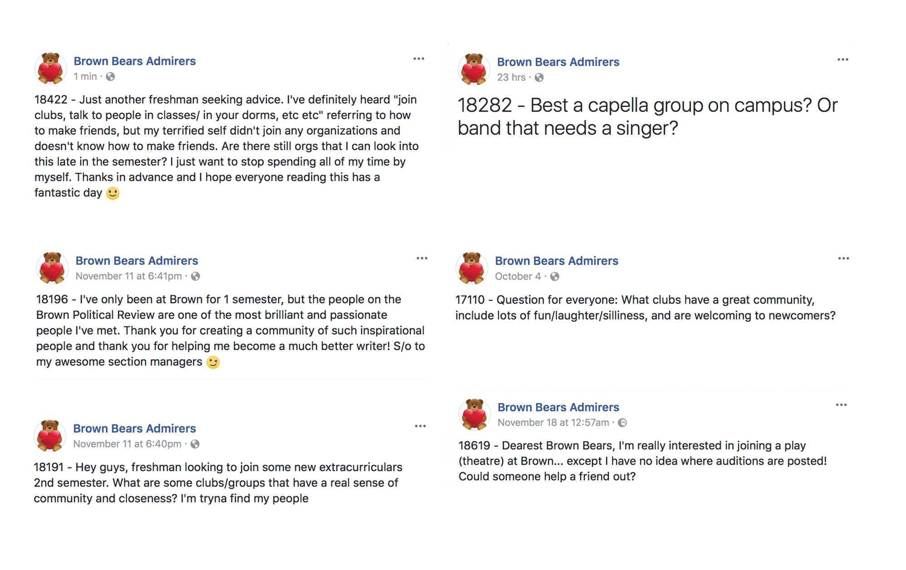We started by sketching out some screens and the basic architecture of the app's functionality. This was our first time doing a real in-depth exploration of UI/UX logic. While we found a the sketching phase to be difficult, it is very helpful in regard of identifying problems in the app's flow.
The design of an app's work flow is integral to controlling how a user should behave and interact with the interface. The smallest changes can have a large impact on the perception of the app.
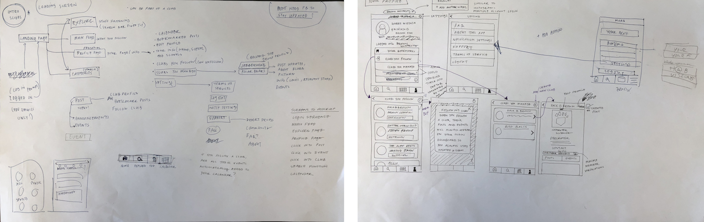 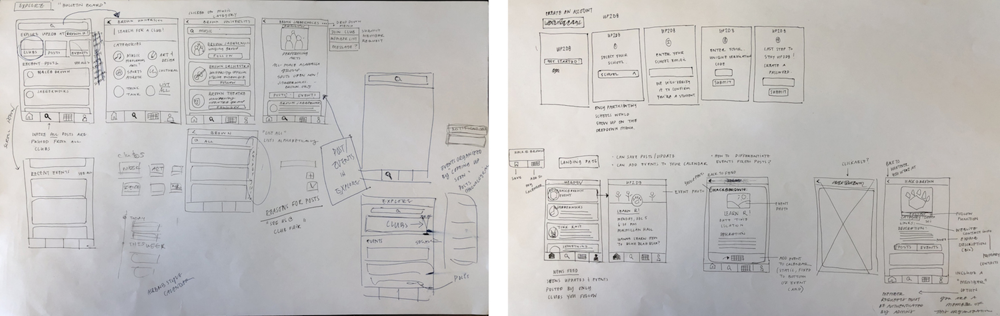Once we fleshed out the architectural layout, we worked on the branding of the app. We went with a bright coral pink and magenta to reinforce the idea of friendliness and boldness. The logo is a combination of a location pin and a handshake, indicating the intersection between social interaction and physical presence. This logo reflects on the app's mission to help students meet new people and events in new places.
The typeface chosen was Neuzeit Grotesk from Adobe Typekit. This decision was made based on the legibility of the typeface due to its large x-height and wideness. One down-side we noticed was that Neuzeit's wideness made it difficult to fit a large amount of text onto the screen without having the downsize. That said, the texture of this typeface in a block of text is still very clean and legible.
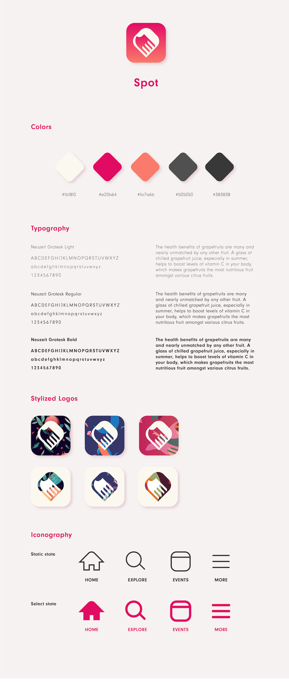Finally, with all our elements and concepts fully finalized, we started prototyping the app screens in Sketch. We quickly noticed that the smallest changes in pixel widths and heights truly affected the screens so much given the limited real estate.
While prototyping, we also began to eliminate unnecessary screens and edit down. It became a lot smoother since we had all the app functionality laid out and the design logic really began to fit together. For example, we had originally planned to have two types of posts: text posts and event posts. We realized that it was unnecessary to have text posts since it might become too much like a status update option like Facebook has.
We also decided this app should not include like or comment functionalities in order to keep it purely informational. This would discourage social media-like behaviors such as what's evident on Instagram (worrying that an event might get too few likes might put unnecessary pressure on clubs).
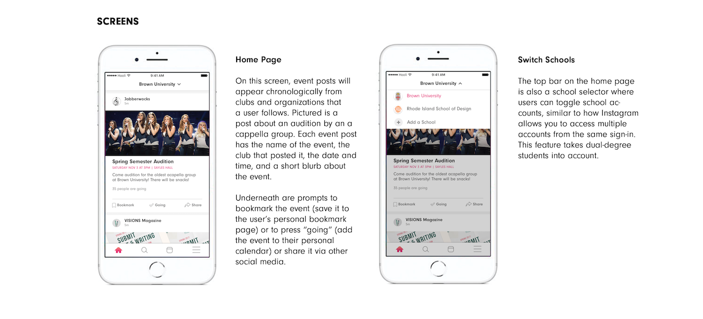 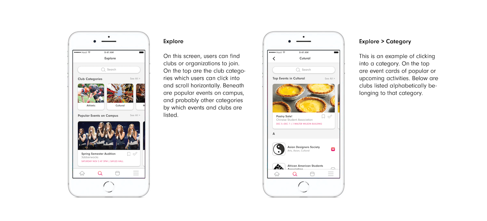 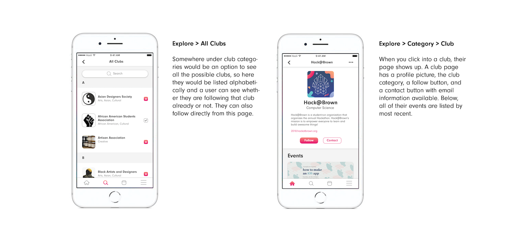 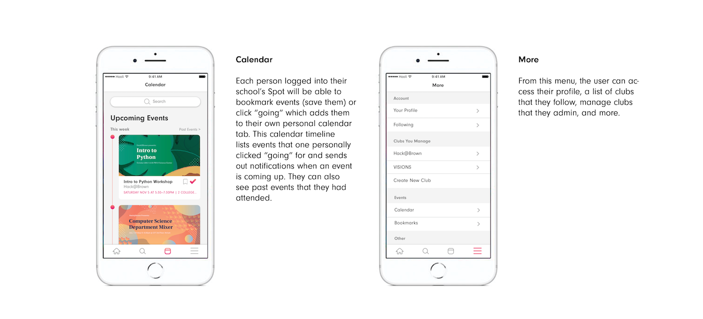 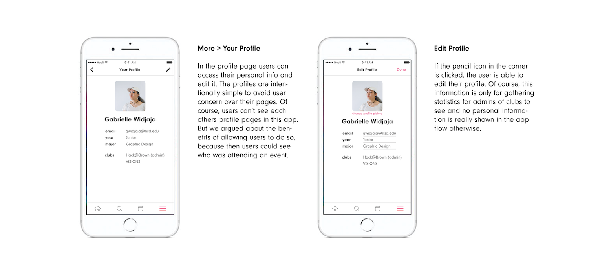 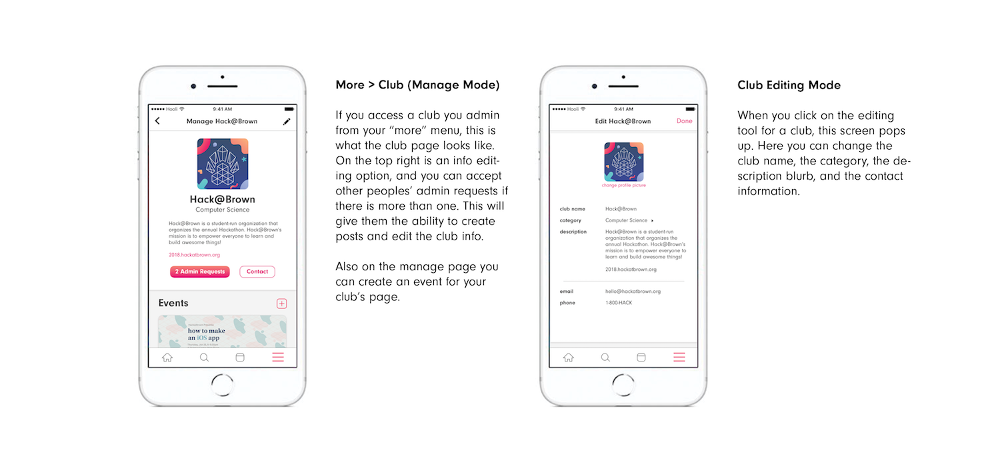As this is a work-in-progress, we want to focus on smaller details going forward. For example, we wrote down a list of possibilities questions to ask ourselves as the designers: Can people make private events? Can people be invited into groups? Where is the option to delete/disband a club? How would a club advertise?
This project allowed us to realize that an app is not just a bunch of sleek screens—rather, that it's the design thinking and decision-making that allows the app to work so seamlessly. It was extremely helpful to use UX references from successful apps like Airbnb, Instagram and Facebook.
I think it was smart to use those ideas, but my motive as a new UIUX designer is to utilize existing ideas to approach new solutions and take more risks. In the future, we would definitely be more experimental with the UI design.
Check out the interactive mockup here!
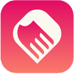